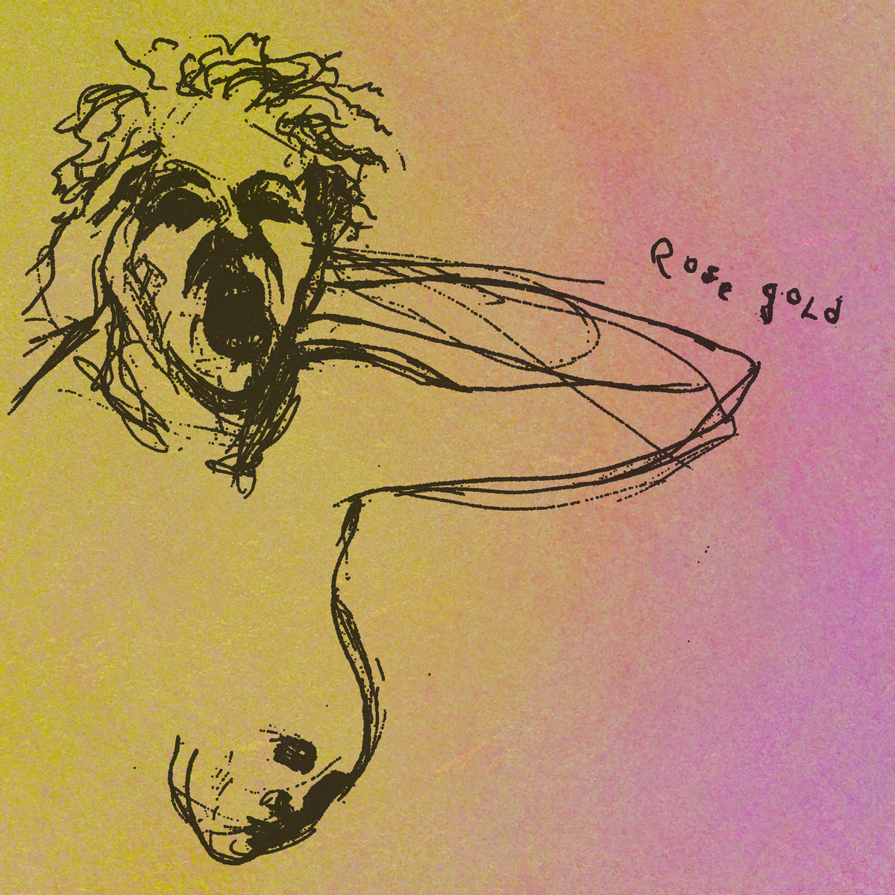
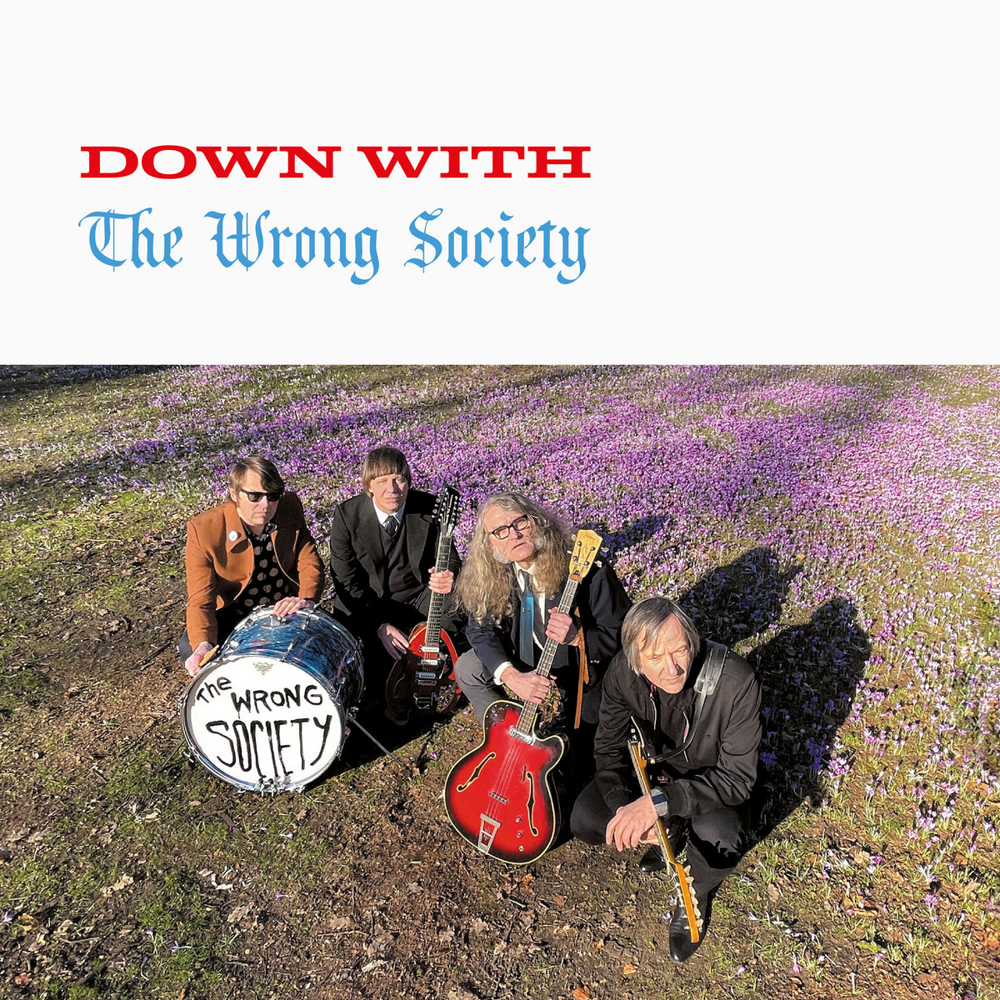
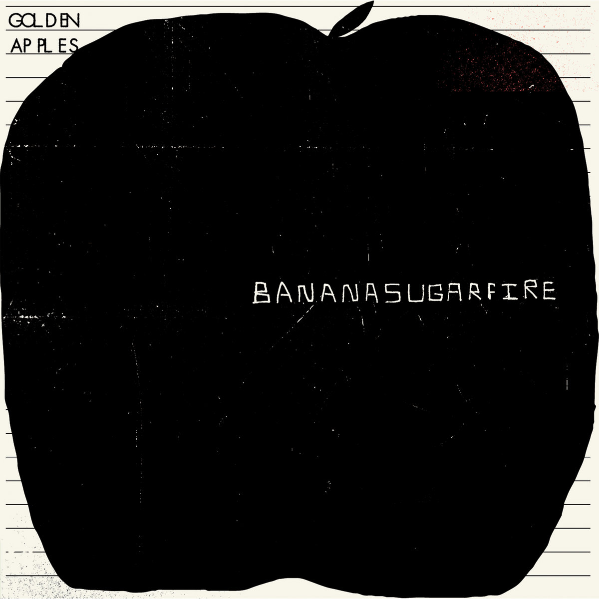

Bandcamp Friday is today, August 7th, 2026. I always like to use these opportunities to both find/support Creative Commons music and thought I'd start sharing some of my picks.
If you're interested in CC music, be sure to checkout the tool I made for finding CC music on BC: cc-bc.

This one is kind of hard to pin down: sounds to me like what you would get by mixing bedroom pop with 90s R&B with lofi hip-hop. ROSE GOLD is chill, catchy, and a little sassy. I'd personally recommend checking out the track "mami".

I'm just always a sucker for this kind of old-school garage rock and while listening to Down With I couldn't help but dance. It's the classic sound we all love - raw recordings of overdriven guitars, crunchy drums, and lyrics about betrayal.

Upbeat, guitar-driven, catchy tunes from Philadelphia. I can't shake the feeling that I've heard "Waiting For A Cloud" on KXUA (my local college radio station), but even if I haven't, the tracks on Bananasugarfire would be right at home on the playlist of a student about to kick off a summer roadtrip.